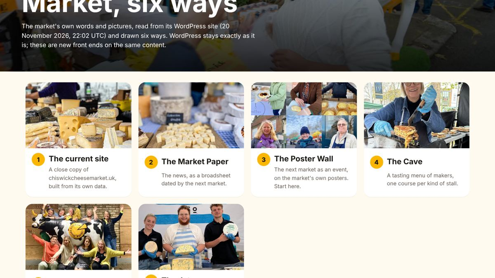
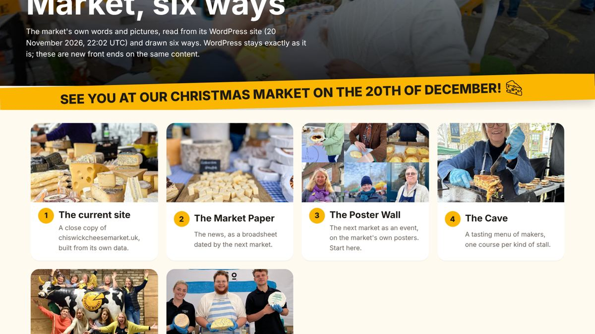

Your market's own words and pictures, drawn six new ways. Your WordPress stays exactly as it is.
A demonstration by Sovereign Website. Not the official site, which is chiswickcheesemarket.uk.
1
In short
A new front end on the content you already have
We read your public WordPress content. No login, no changes: read only.
We drew it six ways, from a close copy of today's site to new ideas.
And it can be changed just by asking, safely, within rules you set.
It is a demonstration, made to start a conversation. Nothing has been launched in your name.
We would like one answer from you: which design, or which parts, feel most like the market?
2
What we read
Everything comes from your own site
18pages
103journal posts
40stallholders
394images
19monthly posters
Read on 20 November 2026 through the public feed your WordPress already publishes (its REST API), gently and read only. Your pictures are not copied: every design loads them from chiswickcheesemarket.uk.
A close copy of today's site, built from its own data. A visitor first: finds how to get there.
5
2
The Market Paper
The news, as a broadsheet dated by the next market. A visitor first: reads the lead story.
6
3
The Poster Wall
The next market as an event, on your own posters. A visitor first: adds the date to their calendar.
7
4
The Cave
A tasting menu of makers, one course per kind of stall. A visitor first: opens a maker.
8
5
The makers
The stallholders first. A visitor first: finds a stall, by name or by kind.
9
6
The data
The open data behind every design. A visitor first: asks the data a question.
10
The seventh part: the site changes when you ask
"There's no banner." Within the hour, there was.

Before

After
Feedback: "the original has a scrolling banner; this one is missing it."
Asked in plain words, in a conversation with the site's agent.
The agent found the market's own banner words, added them to five pages in each design's style, and ran every check.
Signed and published: one recorded change in the site's history, then live, the same afternoon.
11
Why we call it sovereign
You own the site, its history and the way it changes
A typical hosted website today
A sovereign website
Where it lives
A provider's server, a database, plugins
Plain files in a repository you own, publishable anywhere
Making a change
Log in to an admin, or ask an agency and wait
Ask in plain words; your agents make it, check it, publish it
History
Little or none
Every change kept, signed and undoable
Moving on
Export, migrate, rebuild
Take the files: they are already yours
Upkeep
Updates and patches on a server
No server to patch; checks on every change
Who sets the rules
The platform
You, in a written policy
A general comparison, not a judgement of your current site or the people who look after it.
12
Not one chatbot
A small team of agents, each with one job
The keeper makes the change you ask for, and only that.
A designer keeps each design true to its idea.
A brand check keeps every colour, font and logo yours.
A security reviewer looks for anything risky before it ships.
Test visitors try the pages as different kinds of people.
An inbox agent carries your messages and brings back answers.
A slides agent reviewed this briefing.
A conductor keeps them working together.
13
Control, not just access
A guided, safe path for people who are not technical
Handing anyone full control of a website would be reckless. So every agent works under an Agent Behaviour Policy: what it may do, what it can reach, and what stops it.
The policies follow RiskMandate, the insurability layer for agentic AI: what you authorised (the mandate), what the agent can reach (the grant), the gap between them, and the barrier that holds. You cannot shoot yourself in the foot: a request outside the path is not carried out, and goes to the owner.
We read your brand from your own website: the colours, fonts, logos, shapes and voice it actually uses, and wrote them down as brand guidelines.
Ask for "more yellow" and the agent uses Cheese yellow, #FAB600, with black text, checks the contrast, and tells you. No new colours, no redrawn logos.
We also found one thing to fix: white text on the orange buttons reads at 2.9:1, below the 4.5:1 that accessibility guidance asks for. Black text on orange reads at 7.2:1.
15
What we noticed in your data
Your stallholders have no link to their own sites
Each stallholder has a description and a photograph, but the data has no link to their own website, no stall position, and no record of which markets they come to. A few extra fields in WordPress, filled in once per stall, would let any design send visitors straight to the makers.
15 of 110 links in the site's own pages and posts no longer work (checked 20 November 2026). The list is on the demonstration's Admin page.
16
Ideas, if you want them
What we could build next, from the same content
A stall map
Where each stall stands on the day. Today the site has one map pin for the market and pitch sizes on the application form, but no plan.
Who is here this Sunday
The stalls coming to each market, from one field per stall, shown in every design.
Your photos and videos
Your own posts from Instagram, Facebook, TikTok, Threads and X gathered into the site, as links or tap-to-play, so nothing tracks a visitor until they choose. Agents can keep it up to date.
A site for any stallholder
The same approach for each maker who wants one: their own site, their own words, linked from the market.
17
Keeping in step with WordPress
You keep editing in WordPress, as now
We recommend the nightly read: it keeps working if WordPress is slow or down, and any change can be seen and undone. A change in WordPress shows the next morning, or straight away at the press of a button.
18
Being set up now
Ask for a change from the page itself
1
Your QR code
Drop or paste it into the site's Messages pane, once.
2
Write the change
On any page. Paste a screenshot if it helps.
3
The site changes it
Checked and published, or sent to the owner first.
4
The answer waits
In the same pane, when you come back.
Messages are encrypted on your device. Only people given a QR code can ask, and only for changes to how the site looks and reads.
19
Safe by design
Nothing taken, nothing tracked
No cookies, no tracking, no server: the site is plain files.
Nothing was changed in your WordPress.
Every page says it is not the official site, and is kept out of search engines.
Every change is signed by whoever made it and checked before it is published: links, accessibility, no secrets in any file.
For the curious: the written rules are at /policy/ on the demonstration.
20
To be clear
Not a pitch to replace anyone, and free
Keep your current providers. This is not a request to replace them. If you like this way of working, ask them to work like this: files you own, changes by asking, a written policy.
It costs you nothing. Sovereign Website made this to show what the technology can do, and is not charging for it.
With your agreement, we would like to use it as a case study.
21
For our conversation
Which design, or which parts, feel most like the market?
An answer like "3, with the makers from 5" is perfect. Also: anything we got wrong, or would rather not show? Would you like your own QR code? And may we use this as a case study?
Choose a design on any page; it keeps your place. A demonstration by Sovereign Website for Chiswick Cheese Market. Not the official site. All words and pictures belong to Chiswick Cheese Market.

 1 The current site
1 The current site
 2 The Market Paper
2 The Market Paper
 4 The Cave
4 The Cave
 5 The makers
5 The makers